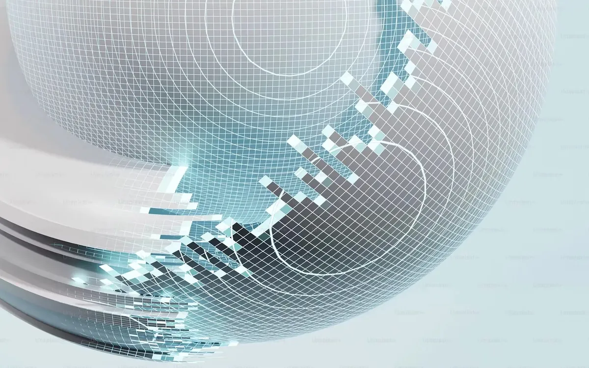

About me
Turning ideas into reliable, scalable software.
I’m a full stack software engineer who cares about the whole product, from the interface people touch to the systems behind it. I focus on building clean, scalable and impactful products.
My story
How I got here
My journey into software engineering started with curiosity about how things work and a desire to build things that make life easier. Over time, that curiosity turned into a habit of building, learning and improving.
Working on real projects taught me to balance speed with quality, and to keep the user in mind at every step.
Learn more →Engineering philosophy
-
Build for users
Solve real problems
-
Write clean code
For the long term
-
Keep learning
Stay curious
-
Think in systems
See the bigger picture
Beyond the code
I enjoy exploring new technologies, reading, and staying active. I believe a balanced life makes me a better developer and a better person.
